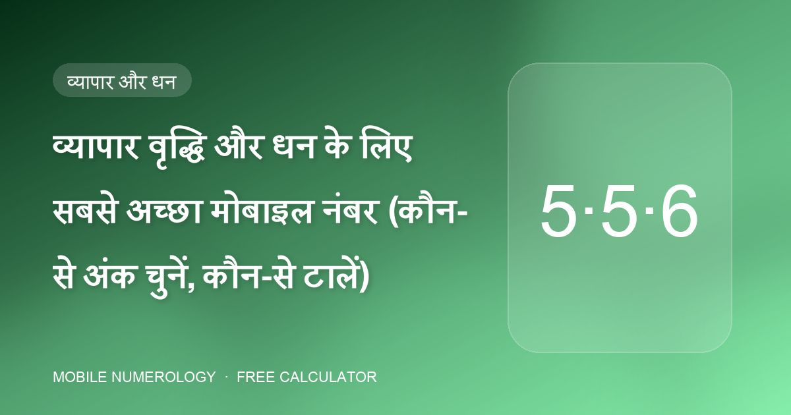

व्यापार वृद्धि और धन के लिए सबसे अच्छा मोबाइल नंबर (कौन-से अंक चुनें, कौन-से टालें)

व्यापारिक मोबाइल नंबर कार्ड, साइनबोर्ड और बिलों पर छपता है और ग्राहक, आपूर्तिकर्ता और बैंक इसे डायल करते हैं। मोबाइल न्यूमरोलॉजी इसे धन का साधन मानती है और धन क्षेत्र — पोज़ीशन 8, 9 और 10 — के लिए तथा कुछ ऐसे अंकों के लिए विशेष मार्गदर्शन देती है जो चुपचाप धन रिसाते हैं।
व्यापार और धन आकर्षित करने वाले अंक
| अंक | कहाँ | प्रभाव |
|---|---|---|
| 5 (बुध) | 8वीं, 9वीं, 10वीं | करियर सफलता, प्रसिद्धि, व्यापार — 9वीं और 10वीं पर सर्वोत्तम; 555 / 55 अंत आदर्श |
| 6 (शुक्र) | 10वीं | "धन के लिए सर्वोत्तम" — अंतिम स्थान पर सबसे मज़बूत धन अंक |
| 3 (बृहस्पति) | 9वीं, 10वीं | अवसर और आत्मविश्वास |
| 7 (केतु) | 9वीं, 10वीं | यहाँ सर्वोत्तम — सलाहकारों, शोधकर्ताओं, आध्यात्मिक व्यवसायों के लिए अच्छा |
| 9 (मंगल) | 1ली, 8वीं, 9वीं | शुरुआत में जोश, परिणाम क्षेत्र में ऊर्जा और सार्वजनिक प्रतिष्ठा |
धन रिसाने वाले अंक
| अंक | कहाँ | प्रभाव |
|---|---|---|
| 0 | अंतिम तीन अंक | 000 पर समाप्त व्यापार हानि का संकेत; 9वीं/10वीं पर 0 सोच कमज़ोर करता है |
| 1 | 6ठी–10वीं | क़र्ज़ से जुड़ी समस्याएँ; 9वीं/10वीं पर साझेदारी समस्याएँ |
| 8 | 10वीं | आर्थिक हानि और क़र्ज़ — व्यापारिक नंबर कभी 8 पर समाप्त न करें |
| 4 | कहीं भी | पूरी तरह टाला जाता है; अचानक उलटफेर |
साझेदारी व्यवसाय
चौथी पोज़ीशन साझेदारी को नियंत्रित करती है। इसे दोनों साझेदारों के मूलांक के शत्रु अंकों से मुक्त रखें, और 9वीं व 10वीं पोज़ीशन पर 1 से बचें, जिसे क्लास साझेदारी विवादों से जोड़ती है। यदि साझेदारों के मित्र अंक अलग हैं, तो ऐसा योग चुनें जो दोनों चार्ट के लिए बैलेंसर हो, या कम से कम हर एक के लिए तटस्थ।
उद्देश्य-विशिष्ट पिन और पासवर्ड
बाकी फ़ोन को भी संरेखित करें। क्लास व्यापार वृद्धि के लिए 1569 और 5559 (दोनों योग 3), धन आकर्षण के लिए 13467 (योग 3) और समृद्धि के लिए 1668 (योग 3) सूचीबद्ध करती है। पासवर्ड के लिए, योग 5 (LAXMI, LOTUS, NEELAM) संवाद और धन प्रवाह को सहारा देता है, और 9 (HANUMAN, VISHNU) रेस्तराँ और ऊर्जावान व्यवसायों को सूट करता है।
एक नमूना "धन" टेम्पलेट
मूलांक 1 व्यवसायी के लिए: पहला अंक 8 के अलावा कुछ भी; सातवीं पोज़ीशन पर शांत 6; फिर पोज़ीशन 8–10 पर 5-5-6 या 5-5-5, जिससे योग 1, 2, 3, 5, 6 या 9 तक घटे। हमारे विश्लेषक की "पोज़ीशन-वार आदर्श अंक" तालिका आपके अपने अंकों के लिए यह टेम्पलेट अपने-आप बनाती है।
ऐसा नंबर कहाँ से खरीदें
555, 55 या 6 अंत वाले नंबर ऑपरेटर (Jio, Vi, Airtel) और numberwale.com, numberspoint.com, vipnumbershop.com, vipfancynumber.com, fancywala.in और lifetimenumber.com जैसे बाज़ारों द्वारा VIP या फ़ैंसी नंबर के रूप में बेचे जाते हैं। अंतिम तीन अंकों से खोजें, फिर भुगतान से पहले उम्मीदवारों को विश्लेषक में पेस्ट करें।
30 सेकंड में अपना नंबर जाँचें
हमारा मुफ़्त कैलकुलेटर आपके मोबाइल नंबर की सभी 10 पोज़ीशन जाँचता है, आपका मूलांक और भाग्यांक निकालता है और शुभ पिन, पासवर्ड, वॉलपेपर व कवर सुझाता है — आप जो भी लिखते हैं वह आपके ब्राउज़र से बाहर नहीं जाता।
अक्सर पूछे जाने वाले प्रश्न
क्या कई 5 वाला नंबर व्यापार के लिए अच्छा है?
अंतिम तीन पोज़ीशन में, हाँ। 5वीं, 6ठी और 7वीं पोज़ीशन पर 5 से बचें, जहाँ यह परिवार क्षेत्र को अस्थिर करता है, और जाँचें कि योग आपके मूलांक का मित्र हो।
व्यापारिक नंबर मालिक से मेल खाए या कंपनी के नाम से?
मोबाइल न्यूमरोलॉजी मालिक की जन्मतिथि से काम करती है, क्योंकि मालिक फ़ोन उपयोग करता है। कंपनी-नाम न्यूमरोलॉजी एक अलग प्रथा है।
मेरा व्यापारिक नंबर 000 पर समाप्त होता है — अब क्या?
क्लास अंत में तीन शून्य को व्यापार-हानि सूचक मानती है। कुछ महीनों में ग्राहकों को 55, 555 या 6 पर समाप्त नए नंबर पर स्थानांतरित करने पर विचार करें।